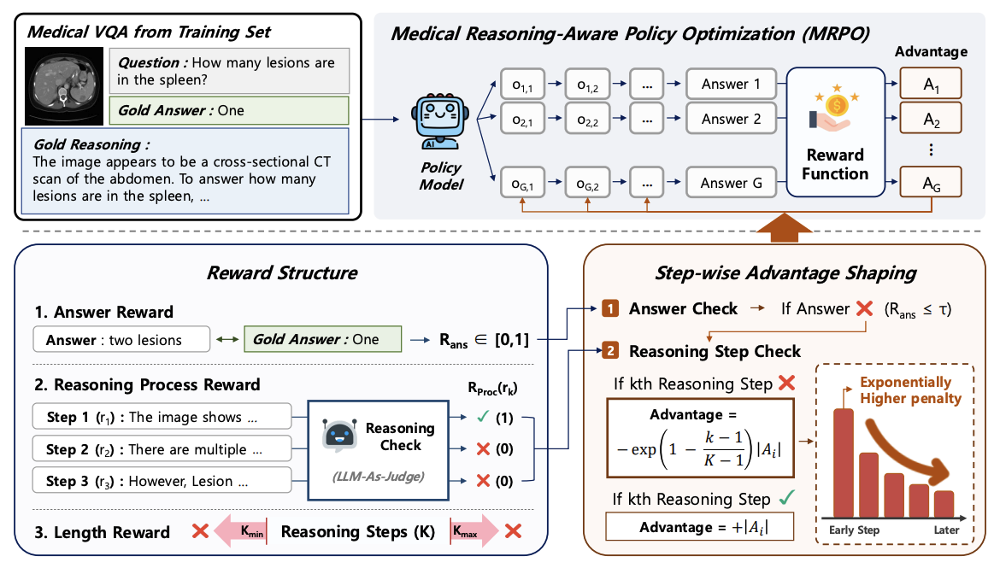
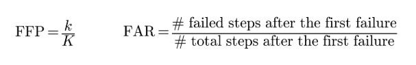
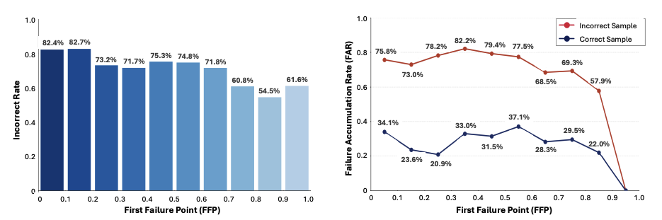
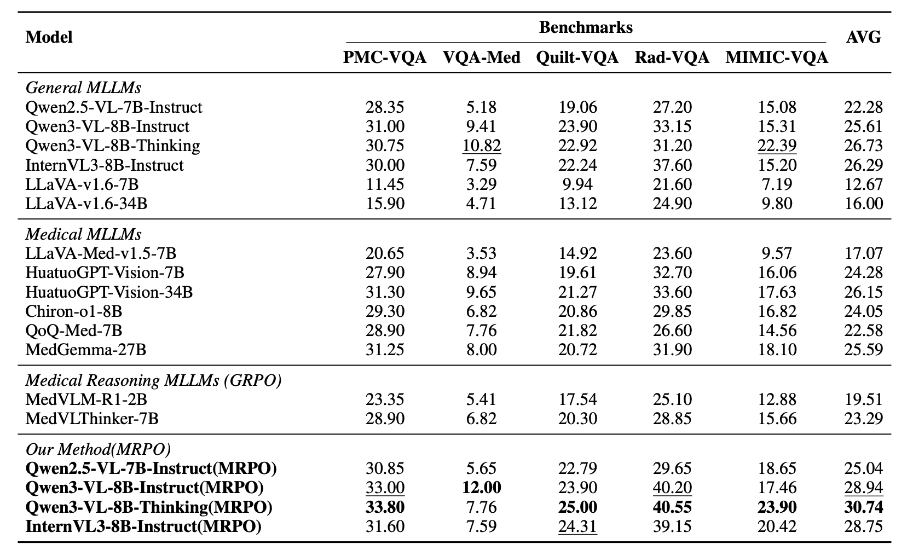
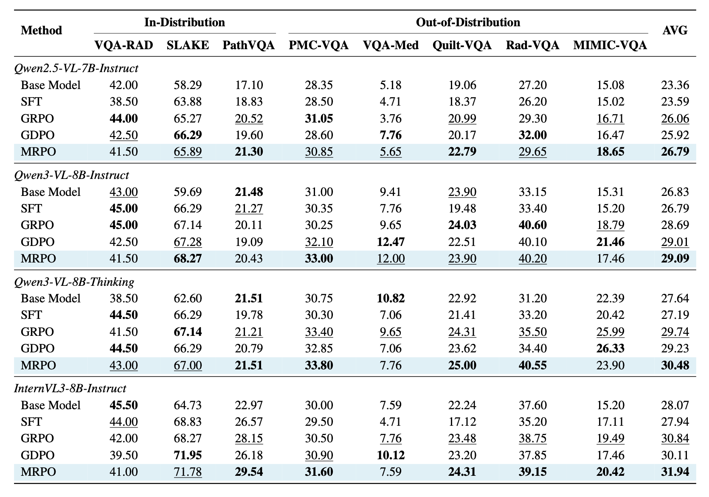
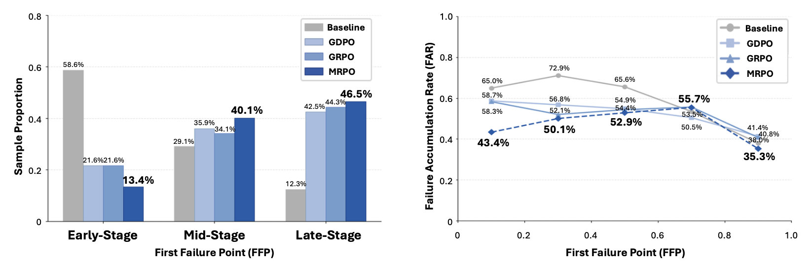

Overview of the MRPO algorithm. The policy model generates multiple reasoning paths, each evaluated by answer, step-wise reasoning process reward, and length reward. When the answer is judged incorrect, MRPO assigns larger penalties to earlier failed steps to correct early-stage reasoning failures.
Abstract
Recent multimodal large language models have shown great promise in clinical image reasoning, but existing post-training pipelines remain predominantly outcome-centric, relying on final answer correctness or sequence-level preferences. This suffers from sparse credit assignment, making it difficult to optimize the reasoning process essential for clinical applications. Our analysis reveals that cascading errors from early-stage reasoning failures are a leading cause of incorrect predictions in medical visual question answering (VQA) benchmarks. Motivated by this, we propose Medical Reasoning-aware Policy Optimization (MRPO), an RL algorithm that incorporates step-wise process rewards. When the final answer is incorrect, MRPO assigns exponentially larger penalties to tokens in earlier invalid reasoning steps, breaking failure cascades without compromising successful paths. Across three multimodal LLM backbones, MRPO consistently outperforms standard GRPO and a recent RL baseline, and on Qwen3-VL-8B-Thinking even surpasses substantially larger medical MLLMs such as HuatuoGPT-Vision-34B by 4.59 points. Moreover, MRPO reduces early-stage reasoning failures from 58.6% to 13.4%, showing that targeted mitigation of cascading failures improves both reasoning quality and final answer accuracy.
Preliminary
To characterize structural failures in medical reasoning, we introduce two metrics over sentence-level reasoning traces. The First Failure Point (FFP) measures where reasoning first breaks down, defined as the relative position of the first invalid step (FFP = k/K); a lower FFP means reasoning fails earlier. The Failure Accumulation Rate (FAR) measures how failures compound afterward, defined as the proportion of invalid steps among those following the first failure. Step validity is judged by GPT-5-mini using two criteria, Gold Alignment (consistency with the gold reasoning) and Answer Contribution (whether a step helps derive the answer), and a step is valid if it satisfies either.

Reasoning quality metrics. (left) First Failure Point (FFP), (right) Failure Accumulation Rate (FAR).
Analyzing four general-purpose and medical MLLMs on open-ended medical VQA, we find that early reasoning failures are a dominant cause of incorrect predictions. Earlier FFPs correspond to substantially higher incorrect rates, and incorrect predictions consistently exhibit higher FAR than correct ones, with accumulation strongest when the first failure occurs early. In other words, once an early reasoning step becomes invalid, subsequent steps are far more likely to fail, forming cascades that dominate final prediction errors. This motivates MRPO, which targets the first point of failure to break these cascades at their source.

Step-wise medical multimodal reasoning analysis. (left) Incorrect rate across FFP bins. (right) FAR across FFP bins for correct and incorrect instances.
Results
MRPO consistently improves answer accuracy over standard GRPO and the recent RL baseline GDPO across all three backbones, on both in-distribution and out-of-distribution medical VQA benchmarks. On Qwen3-VL-8B-Thinking, MRPO raises the average out-of-distribution score from 26.73 to 30.74 (+4.01 points). Trained on only 13K samples, this model outperforms all general-purpose and medical MLLMs we evaluate regardless of scale, even surpassing the substantially larger HuatuoGPT-Vision-34B by 4.59 points. Unlike SFT, which fails to transfer out of distribution, MRPO yields consistent gains on both, indicating that step-wise advantage reshaping induces transferable reasoning rather than overfitting.

Performance comparison of MRPO against existing MLLMs. All models are evaluated on five out-of-distribution benchmarks.

Cross-backbone ablation of training methods. We compare MRPO against the base model, SFT, GRPO, and GDPO on three backbones, namely Qwen2.5-VL-7B-Instruct, Qwen3-VL-8B-Instruct, Qwen3-VL-8B-Thinking, and InternVL3-8B-Instruct.
Reasoning Quality Analysis
Beyond final answer accuracy, MRPO directly improves the underlying reasoning process by breaking failure cascades. Following our First Failure Point (FFP) analysis, MRPO reduces early-stage reasoning failures from 58.6% to 13.4%, far below GRPO and GDPO (21.6%), shifting failures toward later stages where they rarely cascade. It also attains the lowest Failure Accumulation Rate across all methods, most pronounced in the earliest bin, showing that even when an early failure occurs, MRPO best prevents it from propagating. Together, these results show that MRPO mitigates cascading failures along two complementary axes, delaying failure onset and improving recovery once failures occur.

Reasoning quality analysis. (left) Sample distribution across First Failure Point (FFP) stages. (right) Failure Accumulation Rate (FAR) across FFP bins.